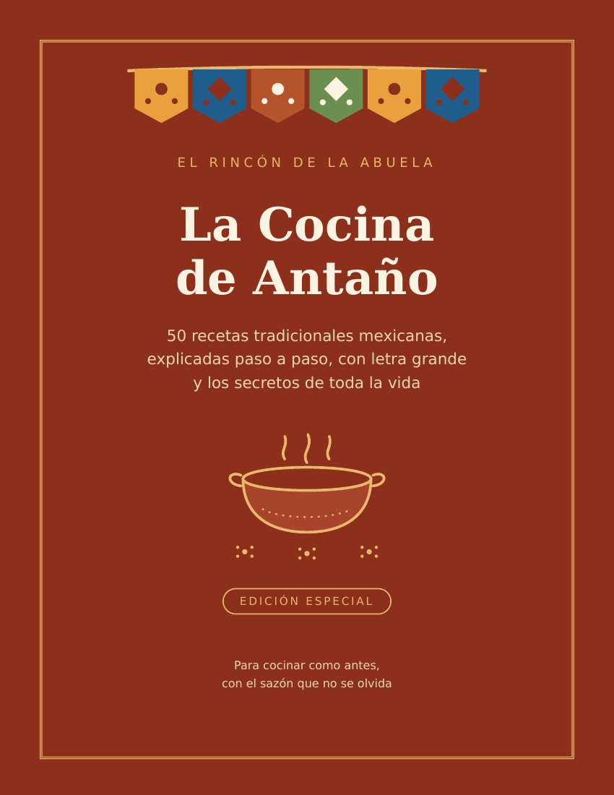
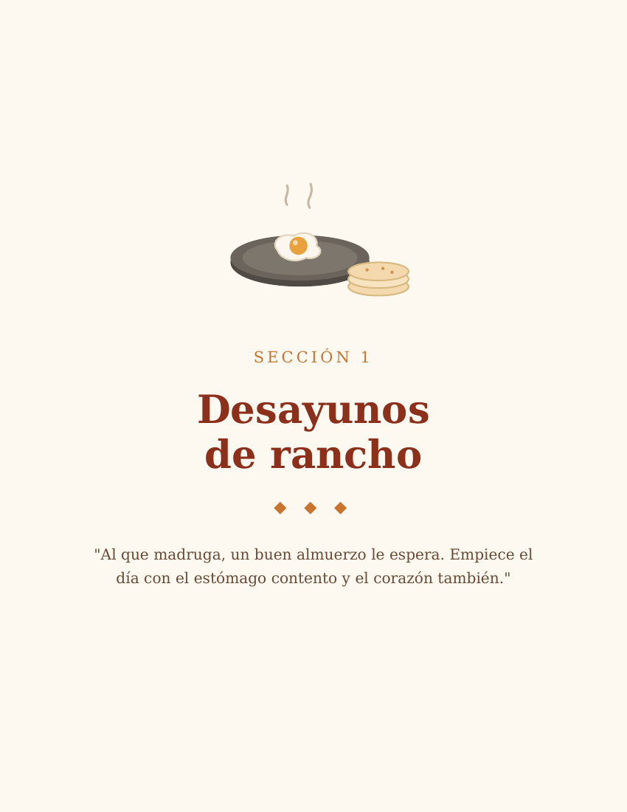
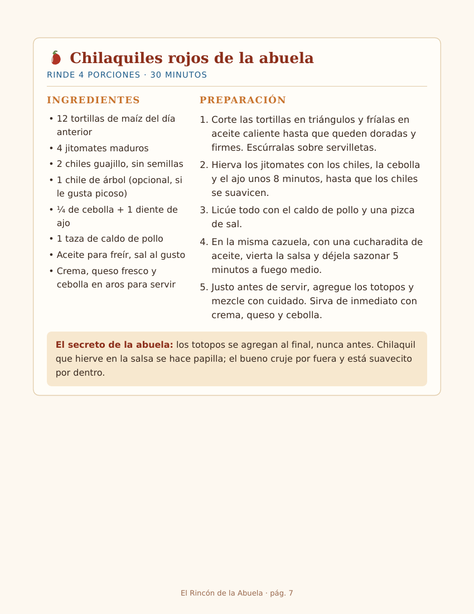

💬 Pedir informes por WhatsApp
Le contestamos en segundos, sin compromiso
¿Qué incluye?
- 50 recetas de antes: chilaquiles, mole de olla, tinga, pozole, tamales, capirotada, café de olla y más.
- Letra grande de verdad, para cocinar sin andar buscando los lentes.
- Los secretos de la abuela en cada receta: los trucos que no vienen en otros libros.
- Llega al instante por WhatsApp al confirmar su pago. Es un libro digital (PDF): se lee en el celular o se imprime.
- Es suyo para siempre: imprímalo las veces que quiera, regálelo a sus hijas.
Mire unas páginas reales



Así de fácil es
Nos escribe por WhatsApp con el botón verde.
Le mandamos su link seguro de Mercado Pago: puede pagar con tarjeta, transferencia o en efectivo en OXXO.
En cuanto se confirma el pago, su recetario le llega aquí mismo por WhatsApp. ¡Y a cocinar!
$99 MXN
Pago único · Sin suscripciones · Sin letras chiquitas
Garantía de la casa: si el recetario no le encanta,
escríbanos dentro de los primeros 7 días y le devolvemos su dinero
completo. Sin preguntas, sin vueltas, sin pena.
Lo que dicen nuestras clientas
[Espacio reservado para testimonios reales de compradoras —
con su permiso y sus palabras. No publicar testimonios inventados.]
También en El Rincón de la Abuela
Sopas de Letras Gigantes — 100 juegos con letra grande y soluciones · $79
Cocina que Cuida — menús y recetas bajitas en azúcar y sal · $149
Un Momento con Dios — devocional de 30 días + oraciones · $99
WhatsApp sin Miedo — guía paciente + antifraudes · $129
El Libro de Mi Vida — sus memorias para escribir y heredar · $149
Pregunte por ellos en el mismo WhatsApp 🌸
💬 Lo quiero — abrir WhatsApp